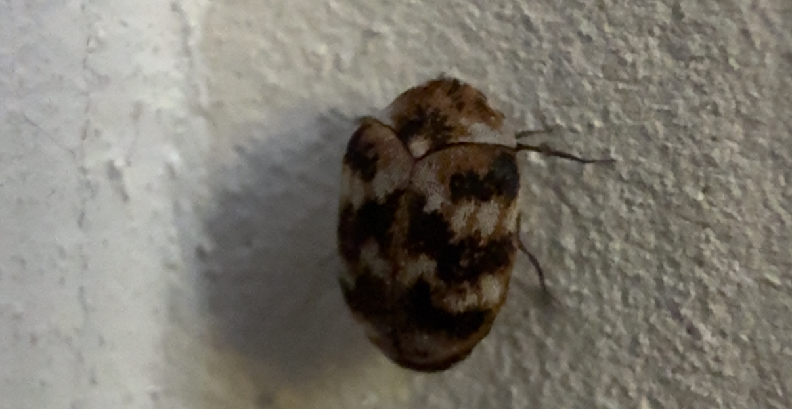
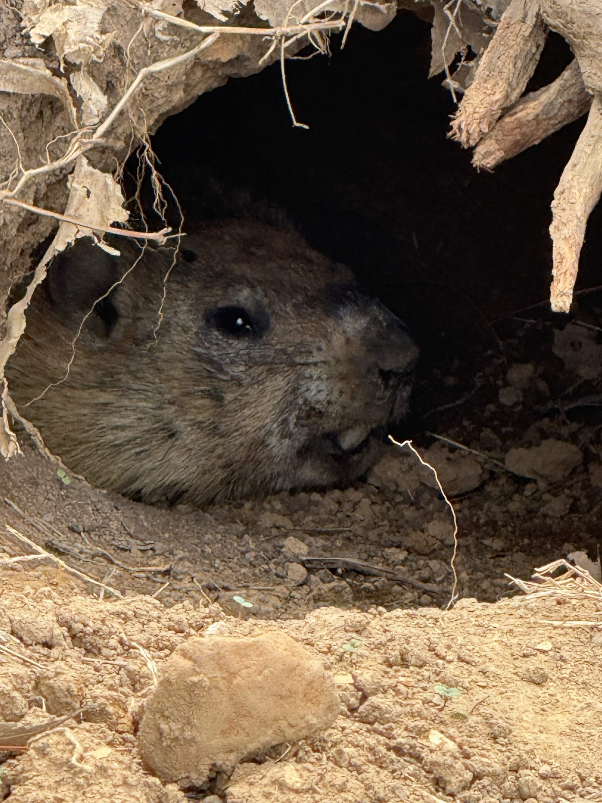
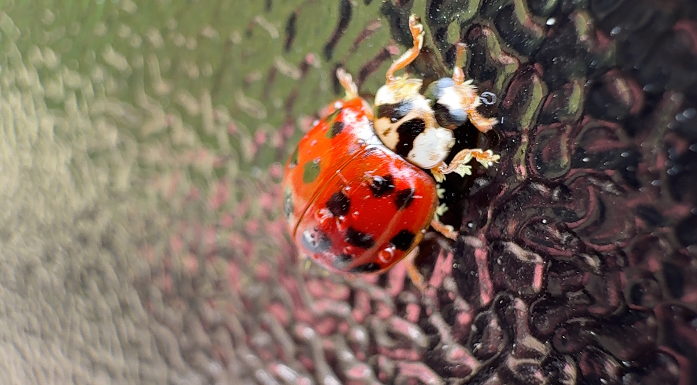
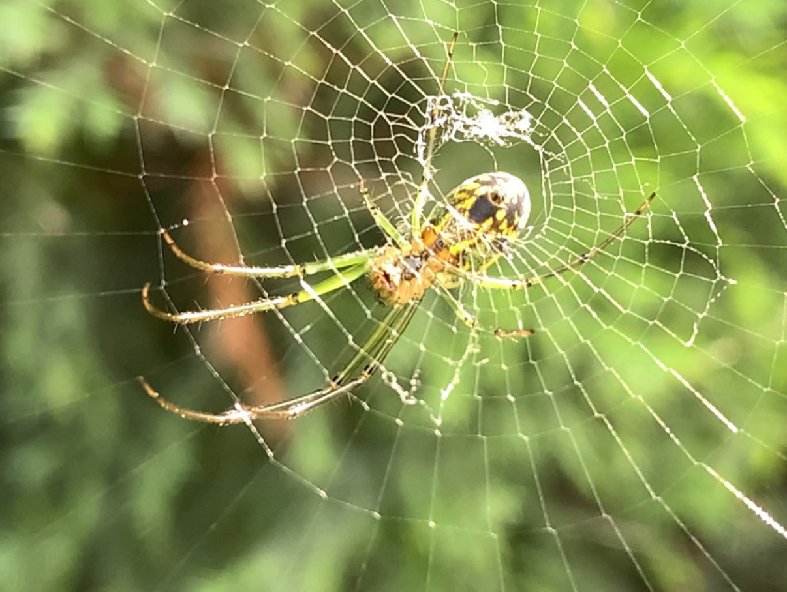
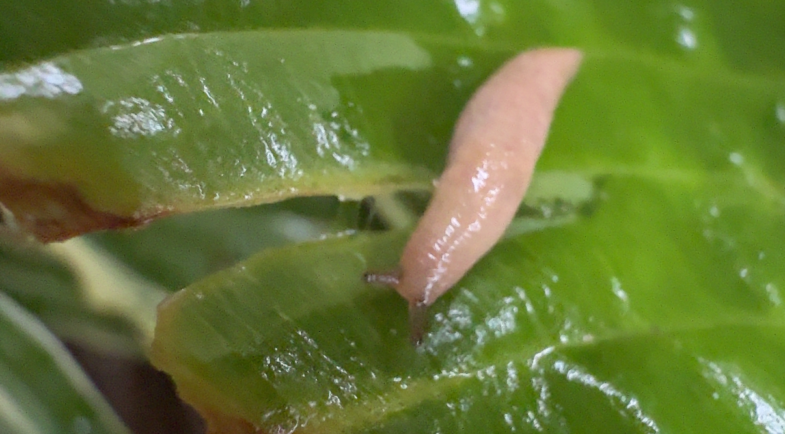
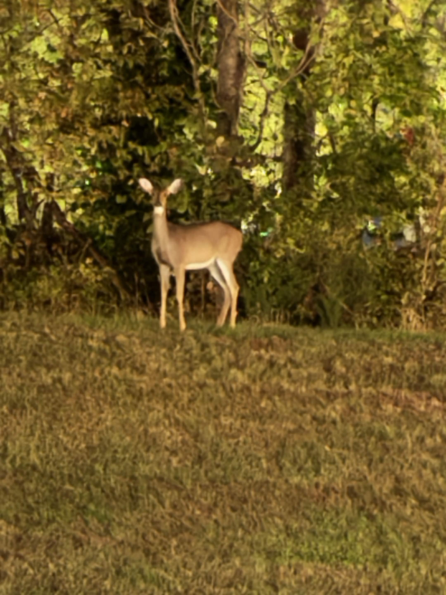
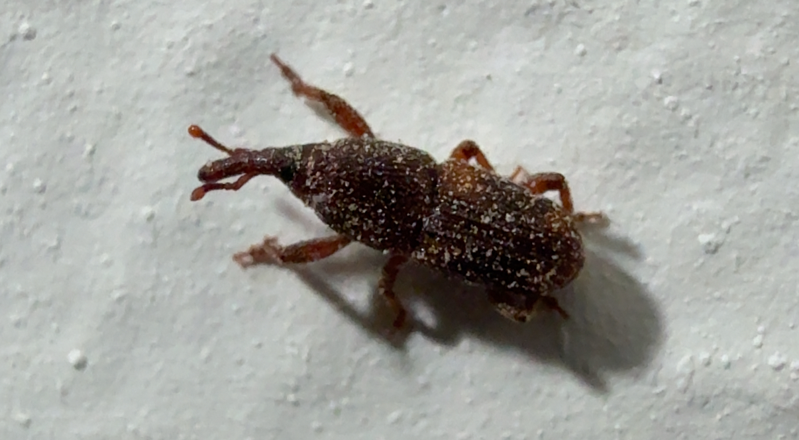
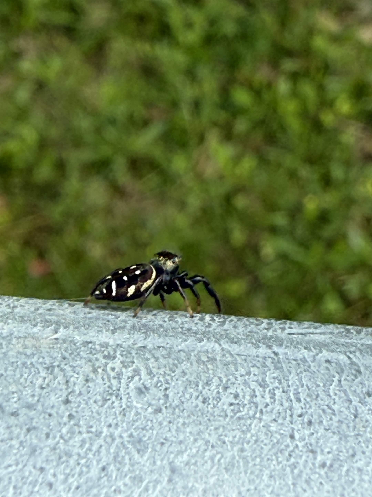

An assassinbug I found. The first one I ever found. Their bite can hurt worse than a wasps sting! I'm asked to provide a reason behind all of my images but I'm not too sure how I could make it relate... I just wanted to make a mosaic of images of cool photos I took.

This is a carpetbeetle. They are known to infest carpets and fibers (by eating them). This is particularly relevant because I had to deal with the little critters making their way into my room. Thankfully they never infested, but I would find some on occassion.

This is a groundhog, how do I know? Probably because it's in the ground. I was on my way to pick up my keyboard, and I almost stepped in his little hole. After doing so he came out and stared at me like this. If he broke my leg I would not have my keyboard! So credits to him for this website.

This is a ladybug. If you're wondering how a random, slightly blurry photo of a ladybug stacks up to the rest of these, well it was actually my first ever macrophotography shot. Ever since then I've loved taking photos of liggle buggies and creatures, even if im a little afraid of them.

This is a photo of the Orchard Orbweaver. This small green spider is distinct with it's orange "face" on it's abdomen. This is also the best macro photo I've ever taken, great lighting and good details, you can actually see the spider spinning it's web in the photo.

This is a milky slug. I found it growing outside in my garden. I like this photo a lot because slugs look funny, and he looks very chill in this photo. He is living his life on a leaf, sliming away.

This is a slightly blurry photo of a deer. Why a deer? Well this deer kept eating all of my flowers at home >:( we eventually had to cover our flowers in capscacin (literal spice) so that they would stop eating them! This is a photo of guilt for the deer.

This funny lookin' bug is a rice weevil. Can you guess what they like to eat? I bet you'll never figure it out, so I'm not telling you. Anyways one summer day these little guys infested our entire pantry and ate all of our food. That sucked to clean out but now we protect our food with jars instead.

This is one of my favorite photos. It's a photo of a Gold Jumping Spider. Fun fact, there are bronze and silver ones too. I like it a lot because he's so cute but also soooo tiny, and he was also very difficult to capture in photo because he kept moving around.